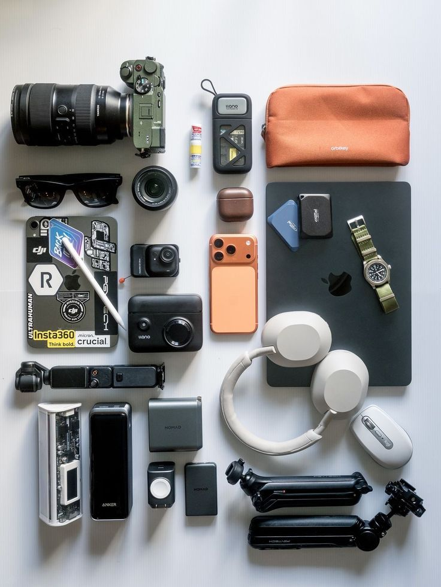

Watch
Seiko for the first real watch. Rolex Submariner if you want the classic diver. LifeScore choice: Cartier Santos.
A man needs his daily objects handled. Phone, wallet, watch, keys, glasses, documents. Fewer things, better chosen.
Wear luxury quietly. Fit, cleanliness, posture, and restraint beat loud logos.

Small objects people see before they hear your story.

Seiko for the first real watch. Rolex Submariner if you want the classic diver. LifeScore choice: Cartier Santos.
Thin, organized, no receipt pile. LifeScore choice: Tom Ford crocodile-embossed leather card holder.
Passport, IDs, receipts, confirmations. Paperwork should feel handled.
Clean black, no yellowed plastic. LifeScore choice: Caudabe.
Water, wipes, gum, sanitizer, microfiber cloth, small atomizer.
Daily frames and shades. Fit your face. Keep them in a case.
Learn the levels before spending. A clean $400 watch worn well beats a loud expensive watch worn badly.
Great for learning what you actually wear.
Seiko, Citizen, Casio.Better movements without jumping into heavy spending.
Tissot, Hamilton, Certina, Christopher Ward.Stronger finishing, history, and brand weight.
Longines, Tudor, Omega, Breitling, TAG Heuer.Buy slowly and know why you want it.
Rolex Submariner, Cartier Santos, IWC, Grand Seiko.More craft, more scarcity, more complexity.
Patek Philippe, Audemars Piguet, Vacheron Constantin.